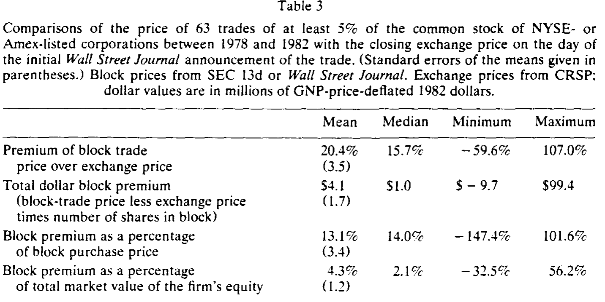
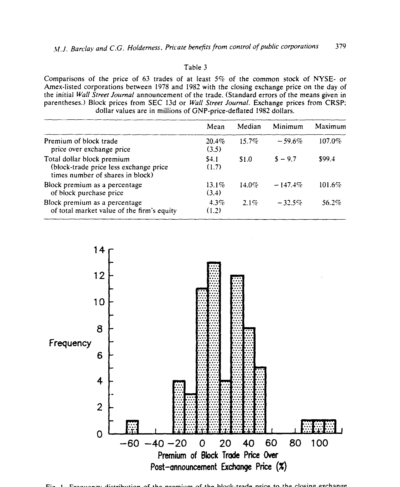
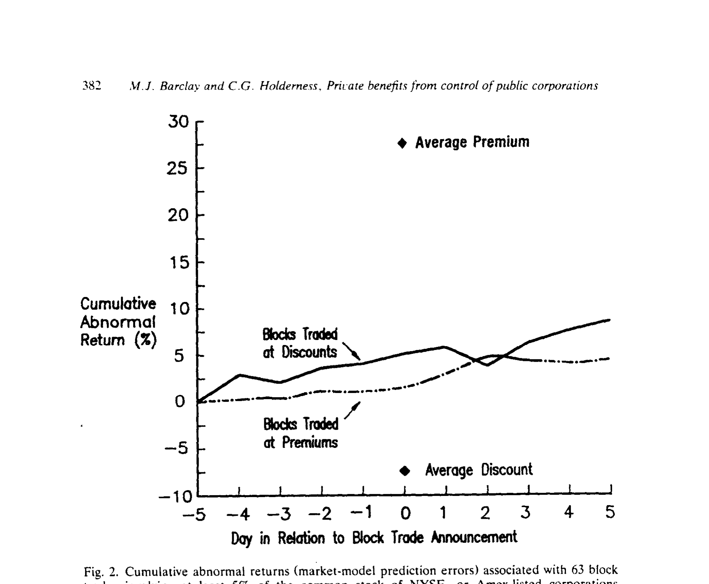
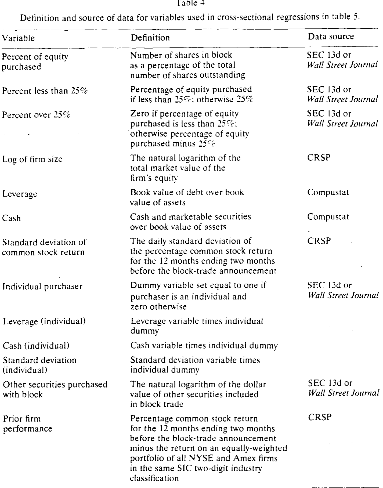
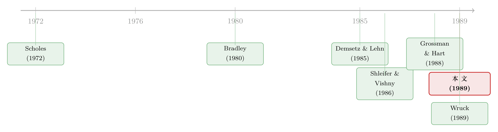

控制权的私房钱：一笔大宗股权交易里溢出来的 20%
本文读的是 Barclay & Holderness (1989, Journal of Financial Economics)：作者分析了 1978–1982 年间 63 笔涉及 NYSE/Amex 公司至少 5% 普通股的大宗股权交易，发现这些股权块普遍以高出公告后交易所价格约 20% 的溢价成交。他们论证，这笔溢价并非信息、也非买家犯傻，而是只属于大股东本人、靠投票权攫取的「控制权私利」。
1 一个被默认了几十年的前提
现代金融理论有一条几乎不被言说的「公理」：上市公司的股权是分散的，每个股东按持股比例分享公司的好处。组合理论让你只持有某只股票的一小撮；股利政策、资本结构、投资决策——几乎所有公司属性，都是在「好处按比例分给分散股东」这个假设下被分析的。
可现实里，越来越多的研究开始抖落出一件别扭的事：很多上市公司，恰恰有那么一两个攥着一大块股票的人。一份 1984 年 SEC 的调查显示，大约 20% 的 NYSE、Amex 和 OTC 公司，至少有一位非高管持有 10% 以上的普通股；Mikkelson 和 Partch (1989) 在 240 家随机抽样的 NYSE/Amex 公司里发现，董事和高管平均控制 20% 的投票权（中位数 14%）。
于是一个自然的问题冒了出来：这些大股东，真的只拿到了和持股比例相称的那份好处吗？
理论家们其实早有怀疑。Fama 和 Jensen (1983)、Demsetz 和 Lehn (1985)、Stulz (1988) 都暗示，持有大块股票的经理人拿到的公司好处，与他们的持股比例不成比例；Grossman 和 Hart (1988)、Harris 和 Raviv (1988b) 则演示了双层股权和超级多数表决如何把这种「私利」永久锁住。但话说回来，这些都是理论。真正缺的是证据——大股东到底有没有拿到不成比例的好处，以及那好处到底值多少钱，几乎是一片空白。
Barclay 和 Holderness 这篇论文，就是来填这个空白的。而他们的切入点之巧妙，正是全文的精华所在。
2 把私利「读」进一个价差里
本文的全部逻辑，其实可以压成一个看似平淡的会计恒等式。先想象一个准备买下一大块股票的人，他在心里盘算两笔收益流：
第一笔，是按比例分给所有股东的现金流——股利和其他普通收益。这笔流的市场价值，已经被交易所里那个公开的股价捕捉了。
第二笔，是大股东能单独靠投票权攫取、把其他股东排除在外的「私利流」。它可以是真金白银的（个人大股东给自己开高薪，公司大股东压低关联交易的转让价），也可以是非货币的（Demsetz 和 Lehn 笔下的「控制权愉悦」，或 Bradley 笔下的生产协同）。
关键在于：大宗交易通常是双方在公平交易（arm's length）下谈成的，交易双方会理性地预判这笔交易对股价的影响。所以——
$$ P_{block} = P_{exchange} + B_{control} $$
其中 \(P_{block}\) 是每股大宗成交价，\(P_{exchange}\) 是公告之后的交易所价格，\(B_{control}\) 就是只归大股东的那份控制权私利。换句话说，公告后股价已经把「按比例给所有人的好处」算干净了，剩下那道价差，只能是大股东一个人的私房钱。
这里有一个常被忽略的细节：为什么是「公告后」的交易所价格？因为一旦交易被《华尔街日报》披露，市场会对预期的管理层更替、信息泄露做出反应，股价会跳。作者要的，是这次跳动之后那个干净的价格——它代表了「在新大股东在场的情况下，按比例归所有股东的价值」。用它做基准，价差才纯粹。
这个设计的优雅，正在于它把一个看不见、说不清的概念（控制权值多少钱），变成了一个看得见、量得出的数字（两个价格之差）。
接着，一个谨慎的人会追问：买一块现成的大股权，难道不能用「在公开市场一笔笔零买、自己攒一块」来替代吗？作者的回答是：通常不能。在已经有一位大股东的公司里攒股，你最多成为「两个大股东之一」，控制力远不如做唯一的大股东。已有的大股东本身就是外人夺取控制权的一道实质性屏障——正因如此，他才能在转让控制权时索取溢价。
3 溢价确实在那里，而且很大
光有逻辑还不够。作者读了 1978–1982 年《华尔街日报》的公司索引——一行一行地读——筛出满足四个条件的交易：(1) 披露了至少 5% 普通股的大宗交易；(2) 交易时股票在 NYSE 或 Amex 上市（这样能用 CRSP 日度数据）；(3) 每股价格和股数能从 SEC 的 13d 文件或《华尔街日报》查到；(4) 公司在公告后六个月内没有被收购或私有化。最后剩下 63 笔。
第 (4) 条是本文识别上的命门，也是它和 Bradley (1980) 的分水岭。Bradley 研究的是 161 笔成功的公司间要约收购，算出收购价比要约后股价高约 13%，并称之为「协同」。但收购、私有化会把「传统公司控制权活动」的收益混进来。Barclay 和 Holderness 故意把这些交易剔除，于是他们度量到的溢价，更可能是纯粹的、对一家仍然公开交易的公司的投票控制权私利，而非并购故事。
样本长什么样？大宗股权占比从 6.6% 到 63.4%，均值 20.7%；成交价均值 $25.9M（中位数 $9.7M），从 70 万到 4 亿美元不等；样本公司普遍比交易所平均公司小——这和 Demsetz–Lehn 等记录的「公司规模与大股权集中度负相关」一致。63 个买家里，13 个是个人，50 个是公司；大约三分之二的公司买家与标的处在同一或相近行业（比如玩具厂 Lego 旗下的 Mego 买了 Tonka Toys 的 9%）。
然后是核心数字。这 63 笔交易的成交价，平均比公告后股价高 20.4%（中位数 15.7%，标准误 3.5），范围从 −59.6% 到 +107%。换成美元，平均溢价 $4.1M（中位数 $1.0M），相当于平均成交价的 13.1%、公司股权总市值的 4.3%。最醒目的一点：80% 的大宗成交价高于公告后股价。

Table 3
频率分布把这件事画得更直观——溢价的质量明显地堆在零的右边（如图 1）。

Figure 1: Frequency distribution of the premium of the block-trade price to the closing exchange
当然，也有 13 笔（20% 的样本）是折价成交的。作者没有回避：这说明持有大股权除了私利，也有私人成本（个人组合无法分散、少数股东诉讼威胁等）。当这些成本超过私利时，买家只有在折价时才肯接手；而卖家之所以愿意整块折价卖、而不拆开零卖，是因为拆开会让股价跌得比折价更多——这恰恰说明，大股东本人对公司提供了有价值的管理或监督服务（Shleifer 和 Vishny (1986)、Wruck (1989) 都讨论过这一面）。私利和监督，是可以并存的两张面孔。
4 这真的是「私利」，而不是别的吗？
到这里，怀疑论者会举两只手。作者也老老实实地把两个替代假说摆上台，逐一处决。
第一个：会不会只是「信息优势」？ 也许溢价根本不是私利，而是交易双方比市场更懂这家公司的价值。如果是这样，那么按贝叶斯方式更新信念的其他市场参与者，应该在溢价交易后看到股价上涨、在折价交易后看到股价下跌。
但真正关键的一步在于：作者去看了公告前后五天的累计异常收益（CAR）。结果与信息假说的预言正好相左——无论这块股权是溢价还是折价成交，公告前后的股价都是正的。具体说，公告两日（−1 和 0 日）的异常收益，溢价组是 2.73%（t = 2.32），折价组是 1.25%（t = 0.81）；从前五天到后五天，两组分别是 6.16%（t = 5.62）和 7.37%（t = 2.99）。折价组的股价不但没跌，反而和溢价组一样涨——这把「溢价来自信息优势」的假说彻底说不通了（如图 2）。

Figure 2: Cumulative abnormal returns (market-model prediction errors) associated with 63 block
第二个：会不会买家就是「犯傻多付」？ 要么是 Roll (1986) 笔下的傲慢（hubris），要么是买家本身是分散持股的公司、代理成本作祟而系统性高买。作者在后文用买家的长期持有行为和回报作答，同样没找到支持——如果真是overpay，买家长期应当连「按比例的那份正常回报」都拿不到，但数据并非如此。
两个替代假说一一倒下，剩下的解释，就是控制权私利。
5 一个被很多人忽略的前置担忧：选择偏差
这篇论文最让我欣赏的，其实不是上面那些主结果，而是作者对自己方法的内在威胁毫不留情的自查。
他们想从「大宗交易」推断「大股权所有」的私利。但聚焦于交易本身，会引入一个选择偏差：如果一块股权整体的价值高于拆散卖，它就会被整体转让——而这正是私利大的情形；反过来，私利小的大股东更可能把股权拆了、通过二次配售（secondary offering）零卖掉。于是逻辑上，如果大股权经常被拆散，用交易样本估出的私利就会高估整体水平。
那么大股权到底常不常被拆？作者去翻了 CDA 的 Spectrum 5 名录：从 1982 年名录里每隔十家选一家，记下最大股权（≥5%），再看它们到 1986 年的变化。519 家里有 394 家 1986 年仍在 NYSE/Amex/NASDAQ 上市。其中只有 16 家（4%）在 1982 年有 5% 大股东、1986 年却没有了——而这 16 家在 1982 年没有一家的大股权超过 25%；另有 73 家（19%）的最大股权被缩小但仍在 5% 以上；与此同时，竟有 117 家（30%）的最大股权反而增大了（如表 1）。

Table 1
结论很干净：大股权一旦形成，往往不会被拆散。所以用大宗交易来估私利，不会带来实质性的偏差。我个人认为，这一节才是全文的「定盘星」——它把一个看似取巧的设计，钉成了一个可信的度量。
6 谁付得起、谁付得多？
最后，作者做了横截面回归，问溢价的美元金额由什么决定。结论分两层：
对所有买家（个人和公司），溢价随公司规模以递减速率上升，随大宗股权占公司流通股的比例以递增速率上升。直觉都不难：公司越大，能攫取的私利绝对额越高，但边际递减；攥的股权比例越高，控制越牢，私利越能落袋，且边际递增。交易前的糟糕业绩则会拉低平均溢价。
对个人买家还多出几条：他们愿意为高杠杆、低股票收益方差、多现金及有价证券的公司付更高溢价。这几条放在一起，画像非常生动——个人大股东尤其偏好那些「兜里有现金、又不太波动、还背着债（约束着其他索取权人）」的公司，因为这些正是私利最容易、最稳地变现的地方。
7 文献脉络
把这条研究线索拉直了看，会发现它是从「价格压力 vs. 信息」一路走到「控制权私利」的。
最早，Scholes (1972) 研究二次配售，问的是大宗卖压到底是临时的「价格压力」还是永久的信息冲击；Dann、Mayers 和 Raab (1977) 接着量大宗交易后的价格调整速度。这一支关心的是大宗股权怎么定价、价格多快回归。
转折来自 Bradley (1980)：他在 161 笔要约收购里发现收购价比要约后股价高约 13%，并断言「目标股份的价值，不来自对目标现金流的按比例索取，而来自它们所赋予的对目标资源的控制」。控制权第一次被明确标了价——只不过他把它叫「协同」，且混在并购里。

与此同时，理论一侧在加固地基：Demsetz 和 Lehn (1985) 论证当现金流方差大时，大股东监督更有价值、股权更易集中；Shleifer 和 Vishny (1986) 说明一个「只监督、不经营」的大股东如何通过促成收购、引入更好的管理团队来提升公司价值；Grossman 和 Hart (1988)、Harris 和 Raviv (1988b) 则演示双层股权、超级多数表决如何把控制权私利永久化；Holderness 和 Sheehan (1988) 探查多数股东在上市公司里的角色。
Barclay 和 Holderness (1989) 正站在这两股力量的交汇处：他们借 Bradley 的「价差度量法」，却把并购、私有化剔除干净，于是第一次给「一家仍然公开交易的公司，其投票控制权的私利」量出了一个干净的数字。几乎同期，Wruck (1989) 从私募配售大宗股权的角度，记录了类似的股价反应，互为印证。
（关于「控制权私利到底值多少钱」这个问题后来怎样被结构化地估计，可参见《控制权的私利，到底值多少钱？——从一桩大宗股权交易的「砍价」里把它解出来》；在法律薄弱的环境里它能被「掏空」到什么程度，可参见《拍卖桌上量出来的「掏空」》；同一对作者把这把尺子转向封闭式基金折价的工作，则见《大股东不开门：封闭式基金的折价，原来是「私利」的影子》。）
8 评论与延伸（Q&A + 研究方向）
(a) 几个可能的疑问
Q：为什么基准要用「公告后」而不是「公告前」的股价？这会不会把溢价做小了？
正是为了纯粹。公告前的股价不含市场对这次控制权转移的反应；公告后的股价已经把「按比例归所有股东」的价值变化（管理层更替预期、信息泄露等）吸收完毕。用公告后价格做基准，剩下的价差才只剩「归大股东一人」的那部分。这反而是更保守的算法——而本文还从三个方向论证了它倾向于低估私利（披露不全、不计消费者剩余、部分交易只是「有望取得控制」而非直接取得）。
Q：折价的那 20% 怎么解释？私利不是应该是正的吗？
折价说明持有大股权也有私人成本：组合无法分散、面临少数股东诉讼威胁等。当这些成本超过预期私利，买家只在折价时才肯接。而卖家肯整块折价卖、而非拆开，是因为拆散会让股价跌得更多——这反过来说明大股东提供了有价值的管理/监督服务。私利与监督，本就是可以并存的两件事。
Q：和 Bradley (1980) 的「协同」到底差在哪？
度量方法几乎一样（成交价对公告后股价的溢价），但样本互补。Bradley 研究要约收购，溢价里混着传统并购、整体接管的收益；本文剔除了六个月内被收购或私有化的交易，度量到的是一家仍然公开交易的公司，其投票控制权本身的私利。后者更接近「日常控制权」的价格。
Q：会不会只是买家信息更灵、或者干脆买贵了？
两个都被数据否决。信息假说预言折价交易后股价应下跌，但折价组公告前后五天的异常收益是 7.37%（t = 2.99），照样为正；overpay 假说则要求买家长期连正常回报都拿不到，事实并非如此。剩下能自洽解释「溢价 + 折价组都涨」的，只有控制权私利叠加监督价值。
Q：选 63 笔交易来推断「所有大股东」的私利，会不会以偏概全？
这是本文最较真的一节。逻辑上，私利大的股权才会被整体转让，于是交易样本可能高估整体私利。但作者用 Spectrum 5 名录显示：1982 年有 5% 大股东的公司，到 1986 年只有 4% 丢了大股东，30% 反而把股权做大了——大股权一旦形成极少被拆。所以选择偏差很小，用交易样本估私利是站得住的。
Q：20% 的溢价、占公司股权 4.3%，算大还是小？
看你跟谁比。它相当于平均 $4.1M 的真金白银，是成交价的 13.1%——对一个个人买家而言绝非小数。但它只占公司总股权价值的 4.3%，意味着控制权私利虽然真实存在，却远没有大到吞掉普通股东大部分价值的程度。这个量级本身，就是对「分散股东按比例分享」这一前提的温和而精确的修正。
(b) 几个可能的研究问题与提案
1. 把这把「价差尺子」搬到公司债市场。 【经济故事】股权大宗交易能读出控制权私利，那么债权人之间呢？当一笔大额公司债在一级交易商之间转手，成交价相对于做市中价的偏离，是否也在为某种「债权人控制权」（契约否决权、重组中的话语权）定价？尤其在临近违约、契约趋紧时。 【可行性】中。需要 TRACE 逐笔成交 + 债券契约数据（Mergent FISD）。识别上要把流动性折价与「控制权溢价」分开，可借鉴 size-adapted 流动性度量。难点是债权人控制权不像投票权那样清晰可观测。
2. 外资大股东付的控制权溢价，是否系统性不同？ 【经济故事】外国大股东面临更高的监督成本、信息劣势，但也可能带来跨境协同。他们为同样一块股权付的溢价，比本土买家高还是低？这能给「外资是不是更短视/更掠夺」的争论提供一个干净的价格证据。 【可行性】中高。需要跨国大宗交易数据 + 买家国籍。识别可比较同一公司被本土 vs. 外资大股东接手时的溢价，控制行业、规模、业绩。与《同一家公司，两种股票，两个价格——控制权的价钱，写在一国的法律里》的跨国投票权溢价框架天然衔接。
3. 现金持有与控制权私利的因果方向。 【经济故事】本文发现个人买家为「多现金」的公司付更高溢价——暗示现金是私利变现的「燃料」。那么反过来，大股东入主后，公司的现金政策是否被改写？私利动机会把现金留在账上（方便侵占），还是因监督而吐出来？这直接对话 Jensen 的自由现金流假说。 【可行性】高。大宗交易公告日是清晰的事件点，可做前后对照的现金/派息政策事件研究。需 Compustat + 13d 文件确认控制权转移时点。可参见《现金为什么一定要「还」出去？——四十年后，重读 Jensen 的自由现金流》。
4. 折价大宗交易：私人成本的横截面。 【经济故事】本文把 13 笔折价交易归因于「私人成本超过私利」，但没系统刻画这些成本来自哪里。是诉讼风险、分散化损失，还是行业特性？把折价交易单拎出来做横截面，能给「持有大股权的代价」第一次画像。 【可行性】中。样本量是硬约束（单篇里只有 13 笔），需要把样本扩展到更长年份或纳入 NASDAQ，再用州法（少数股东诉讼难易）、行业波动率作为私人成本的代理。
9 我的判断
这篇论文的贡献，不在于它跑了多复杂的模型——它几乎没有模型，回归也朴素——而在于一个度量上的创意：把「控制权值多少钱」这个长期停留在理论层面的概念，翻译成两个可观测价格之差，再用一套近乎洁癖的样本筛选（剔除并购、私有化）和自查（用 Spectrum 验证大股权不被拆散、用 CAR 否决信息假说）把这个度量钉得很牢。结论温和而有分量：控制权私利真实存在，约占公司股权价值的 4.3%——既推翻了「分散股东按比例分享」的天真前提，又没有夸张到「大股东吞掉一切」。
对识别，我仍有两点保留。其一，「公告后股价已完全反映按比例价值」这一假设是整篇论文的支点，但若市场对控制权转移本身定价不充分（贝叶斯更新不完全），价差里就会混入残余信息成分——作者用 CAR 做了反驳，却无法完全排除慢速信息扩散。其二，样本只有 63 笔、且偏小公司，横截面回归（尤其是个人买家那几条）的统计功效有限，个别系数（如现金、方差）值得在更大样本里复验。
后续我最想看到的，是把这把尺子在时间和空间上都拉长：到了机构持股主导、维权基金活跃的今天，控制权私利的量级是涨了还是被治理改善压下去了？以及，在投资者保护薄弱的市场里，这个 4.3% 会膨胀到多少——后来的结构化估计和跨国证据已经部分回答了这个问题，但用「干净的大宗交易价差」直接重测，仍然是最有说服力的做法。
参考文献
- Barclay, M. J., & Holderness, C. G. (1989). Private benefits from control of public corporations. Journal of Financial Economics 25(2), 371–395.
- Bradley, M. (1980). Interfirm tender offers and the market for corporate control. Journal of Business 53(4), 345–376.
- Dann, L. Y., Mayers, D., & Raab, R. J., Jr. (1977). Trading rules, large blocks, and the speed of price adjustment. Journal of Financial Economics 4(1), 3–22.
- Demsetz, H., & Lehn, K. (1985). The structure of corporate ownership: Causes and consequences. Journal of Political Economy 93(6), 1155–1177.
- Fama, E. F., & Jensen, M. C. (1983). Separation of ownership and control. Journal of Law and Economics 26(2), 301–325.
- Grossman, S. J., & Hart, O. D. (1988). One share/one vote and the market for corporate control. Journal of Financial Economics 20, 175–202.
- Harris, M., & Raviv, A. (1988). Corporate governance: Voting rights and majority rules. Journal of Financial Economics 20, 203–235.
- Holderness, C. G., & Sheehan, D. P. (1988). The role of majority shareholders in publicly held corporations: An exploratory analysis. Journal of Financial Economics 20, 317–346.
- Roll, R. (1986). The hubris hypothesis of corporate takeovers. Journal of Business 59(2), 197–216.
- Scholes, M. (1972). The market for securities: Substitution versus price pressure and the effects of information on share prices. Journal of Business 45(2), 179–211.
- Shleifer, A., & Vishny, R. W. (1986). Large shareholders and corporate control. Journal of Political Economy 94(3), 461–488.
- Wruck, K. H. (1989). Equity ownership concentration and firm value: Evidence from private equity financings. Journal of Financial Economics 23(1), 3–28.